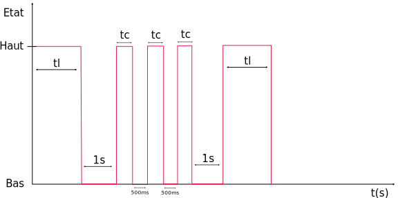

Création et utilisation de macros en langage C/C++
Réalisation de l'activité
Pour cela vous devrez impérativement utiliser le squelette du programme Arduino donné ci-dessous :
/**************************************************************************************************
Nom ......... : Clignotement_led_13.ino
Role ........ : Fait clignoter la led reliée à la pin 13 d'une carte Arduino MEGA
Cycle : 500ms OFF; 500ms ON
Auteur ...... : Votre nom
Classe ...... : Votre classe
Etablissement : Lycée Louis Rascol, Albi, FRANCE <http://louis-rascol.entmip.fr/>
Mail ........ : Votre_mail@e.rascol.net
Version ..... : V0.0 du xx/xx/16
Licence ..... : Copyright (C) 2016 Votre nom
This program is free software: you can redistribute it and/or modify
it under the terms of the GNU General Public License as published by
the Free Software Foundation, either version 3 of the License, or
(at your option) any later version.
This program is distributed in the hope that it will be useful,
but WITHOUT ANY WARRANTY; without even the implied warranty of
MERCHANTABILITY or FITNESS FOR A PARTICULAR PURPOSE. See the
GNU General Public License for more details.
You should have received a copy of the GNU General Public License
along with this program. If not, see <http://www.gnu.org/licenses/>
Compilation . : Avec l'IDE Arduino
****************************************************************************************************/
//Ajout de bibliothèques
//Déclarations de constantes
//Déclaration de variables
void setup()
{
//Insérez ici vos paramètres
}
void loop()
{
//Insérez ici votre programme principal
}
Pour la suite vous pouvez télécharger un fichier zip squelette pré-rempli : Télécharger
Marche à suivre :
- Faire l'algorithme du programme en utilisant la notation algorithmique normalisée.
- Créer un fichier Arduino et y copier-coller le squelette.
- Codez votre algorithme ne soyez pas avare en commentaires.
- Téléversez sur la carte et vérifiez le bon fonctionnement.
- Appelez le professeur pour valider.
Important
La validation de l'exercice sera uniquement effectuée lors de la présentation d'un algorithme juste et d'un code Arduino suffisamment commenté en fonctionnement.
1. Émission d'impulsions
Nous souhaitons créer une macro, qui lorsqu'elle est appelée envoie le signal suivant sur la pin numérique 2 :

- Le prototype de la macro à créer est le suivant :
void signal(int tl, int tc). - Le programme principal devra appeler la macro avec ses deux paramètres d'entrée, nous imposons
tl>tc
2. Fabrication d'une calculatrice
Nous souhaitons créer une calculatrice dont la saisie des nombres sera effectuée avec le clavier et la visualisation des résultats sur le moniteur série.
"Clear Everything" by Hurock24 is licensed under CC BY-NC-ND 2.0
2.1. Création des macros
Créer les 4 macros suivantes, qui auront pour tâche la réalisation des 4 calculs de base :
float addition(float a, float b)float soustraction(float a, float b)float multiplication(float a, float b)float division(float a, float b)
2.1. Création du programme principal
Créer le programme principal qui aura pour tâche :
- L'affichage du menu sous la forme suivante :
Note
La saisie de nombres à l'aide du clavier et l'acquisition par les fonctions Serial.parseFloat() ou Serial.parseInt() est complexe nous donnons un exemple ci-dessous.
/***************************************************************************************************
Nom ......... : Test_serial_calculette.ino
Role ........ : Envoi de flottants et d'entiers par le serial grâce aux fonctions parseFloat() et parseInt()
Auteur ...... : J.Serrand
Mail ........ : joris.serrand@rascol.net
Version ..... : V0.0 du 27/03/17
Licence ..... : Copyright (C) 2016 Joris SERRAND
This program is free software: you can redistribute it and/or modify
it under the terms of the GNU General Public License as published by
the Free Software Foundation, either version 3 of the License, or
(at your option) any later version.
This program is distributed in the hope that it will be useful,
but WITHOUT ANY WARRANTY; without even the implied warranty of
MERCHANTABILITY or FITNESS FOR A PARTICULAR PURPOSE. See the
GNU General Public License for more details.
You should have received a copy of the GNU General Public License
along with this program. If not, see <http://www.gnu.org/licenses/>
Compilation . : Avec l'IDE Arduino
***************************************************************************************************/
//Déclaration des fonctions
/**************************************************************************************************/
void setup()
{
//Initialisation de l'UART
Serial.begin(9600);
}
/**************************************************************************************************/
void loop()
{
float nombre_flottant=0;//Déclaration de la variable qui recevra la saisie du flottant sur le moniteur série
int nombre_entier=0; //Déclaration de la variable qui recevra la saisie de l'entier sur le moniteur série
Serial.println("Veuillez rentrer un flottant :");
while(Serial.available()<=0) //On attend l'écriture sur le serial
{
}
if(Serial.available() > 0)//Attente de la réception d'un message
{
nombre_flottant=Serial.parseFloat();
Serial.println(nombre_flottant);
}
Serial.println("Veuillez rentrer un entier :");
while(Serial.available()<=0) //On attend l'écriture sur le serial
{
}
if(Serial.available() > 0)//Attente de la réception d'un message
{
nombre_entier=Serial.parseInt();
Serial.println(nombre_entier);
}
}
Créé: November 13, 2023